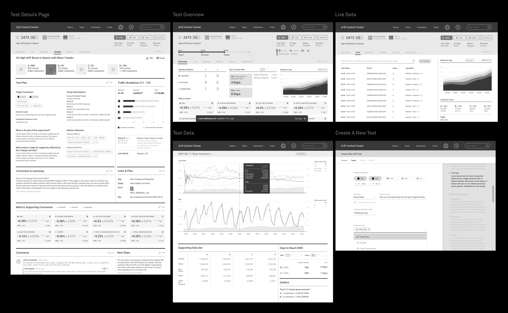

Project Type
User experience
Interaction design
Tools
Sketch & Figma
Zeplin
CSS
Project Length
> 12 months
My Contribution
Research Analysis
User Interviews
Journey Mapping
Wireframing
Design System
Overview
Experiment Center (XPC) is a platform that enable all internal users at Coupang to run quality experiments. It empowers teams to make informed and timely business decisions based on the experiments’ data.
As the chief (& only) designer on the Experiment Platform team, I led the redesign of the user interfaces. From ideation to development, over the course of 12 months I’ve worked alongside with interdisciplinary team members to craft this platform.

A / EMPATHIZE
A1. Challenge
Different User Types
There are two major types of users using XPC:
-
Experienced Users
-
New Users
These are power users who create experiments on a daily basis. They are looking for more advanced features which enable them to dive deep into the complex datasets.
New users have very little experience in AB testing so creating their first test and monitor/ interpret its data can be quite confusing and imitating. Very often they don’t know where to start.
In order to accommodate both needs and expectations, we were searching to find an optimal balance point between “holding their hands” and “let them freely explore”.
A2. Generative research
Discovering the Dealbreakers
In order to get a clear picture of usability issues in the current experience. We conducted 15 user interviews with full-time employees across all teams to learn what's their daily routines with XPC look like. This is what they said:

A3. Competitive Analysis
Evaluate the viability
Meanwhile I did a competitive analysis about other similar platform’s features, so we can identify unserved or underserved gaps.

We were using Google Sheets because it's the tool that everybody had access to.

B / DEFINE
B1. Key Insights
How might we optimize the XPC
Based on the painpoints that were collected from the user interviews, we tried to emphasize important stages during each user flow.

B2. User Personas
Core Needs
We developed personas in order to understand what different core needs each user type may have. Below are two of them:

B3. User Journey Map
Analyze Opportunities
Based on the painpoints that were collected from the user interviews, we try to emphsize important stages during each user flow. Promoting their outcomes are expected to increase efficiency as well as guiding new users.

B4. Main User Flow
Process mapping
I created a process map that helped me identify relationships and understand the gaps along the experimentation process.


C / IDEATE
C1. Mapping
Contents Architecture
After several meetings with PO and data scientists about what are the full weight issues and potential solutions that might solve them. I created a sitemap to map out all the content branches

In order to walk the team through this sitemap, I put up a slide presentation which they can click to dive in, above are some of the screenshots.
C2. Brainstorming
Layout Exploration
Because Experiment Center (XPC) curates a great amount of data and information, in order to find out what would be the best approach in terms of presenting the information hierachy, I explored different layout options before jumping into vanilla wireframes.

C3. Low-fi
Vanilla Wireframes
For the first run of wireframing, I mapped out all the possible pages. No color or typefaces’ choices involved yet because I want to focus on the contents’ structure first. This also allows me to disregard constraints to explore the most creative solutions. Below are just few out of hundreds...

C4. Iterations
Refinements based on the feedbacks
Vanilla wireframes were barely the first step to construct the whole web application, starting from there I worked with product owner and data scientists to make further decisions on details. After many runs of iterations we had a ‘final’ version. Below is just a glance on the test results’ page evolution.